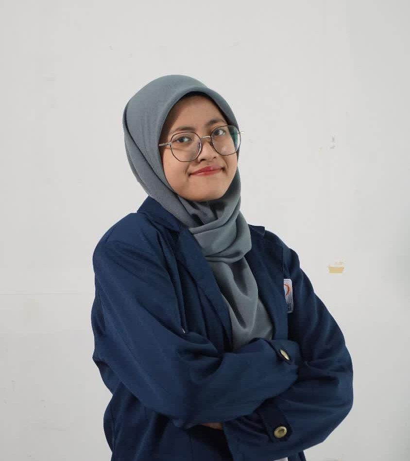
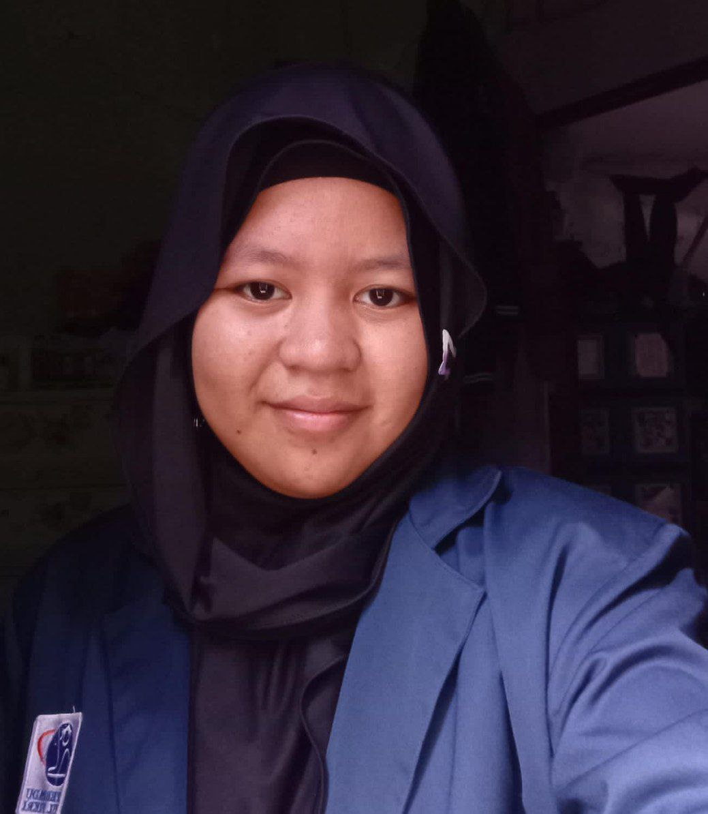
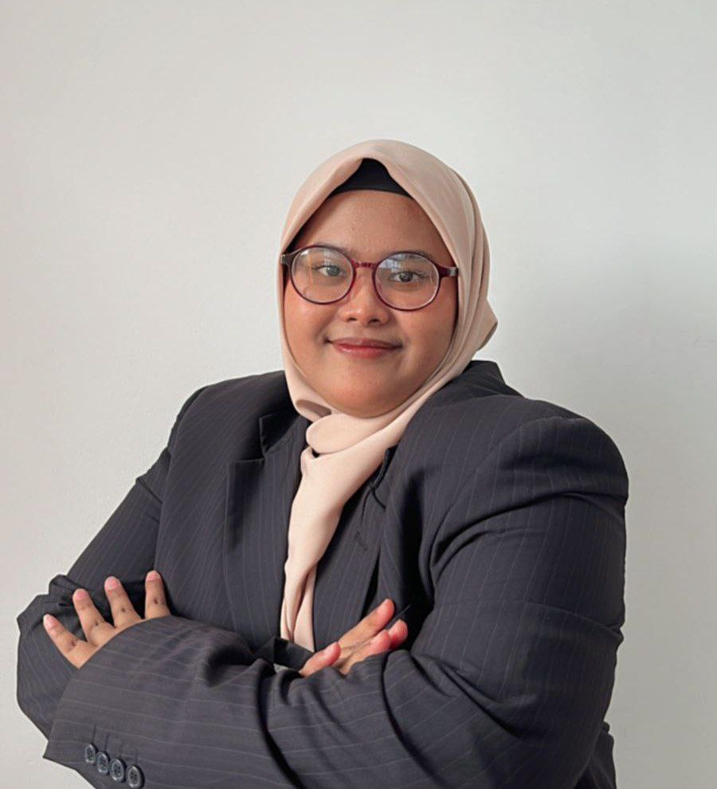
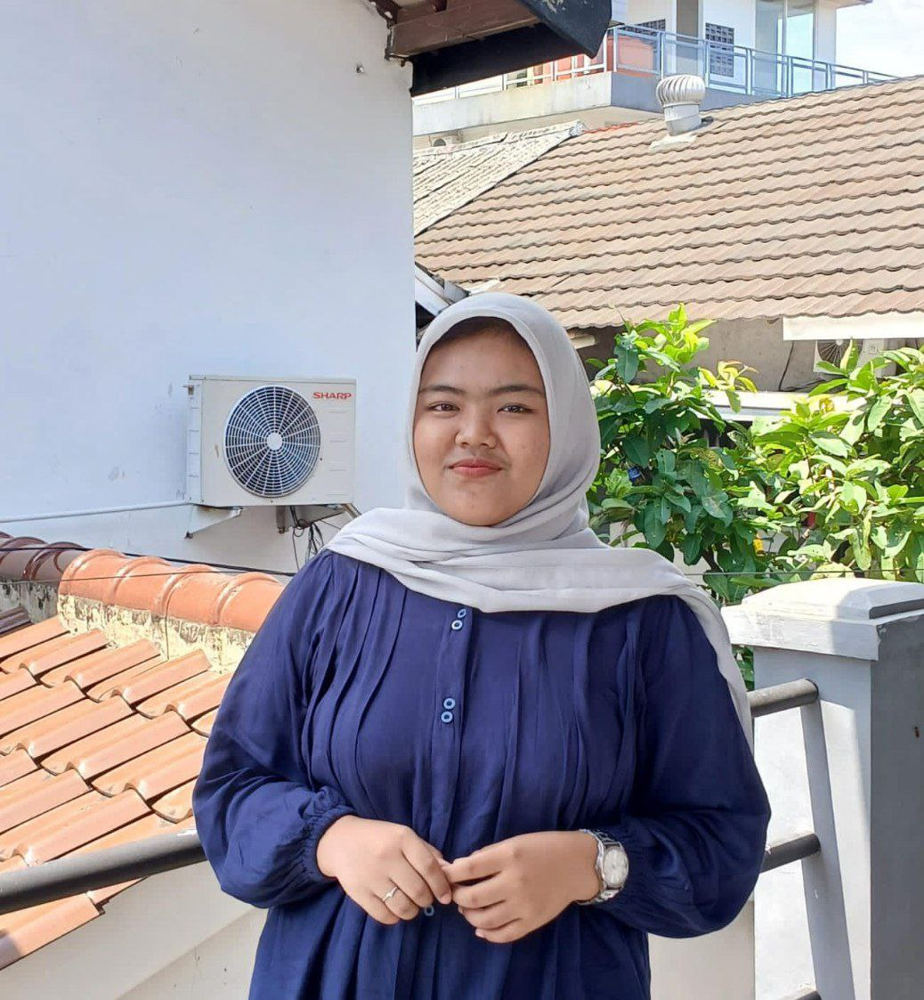

Kesehatan Anda Prioritas Kami
Rumah sakit terpercaya dengan pelayanan terbaik untuk Anda dan keluarga.
Mengapa Memilih Nufian Hospital?
Nufian Hospital menawarkan layanan medis berkualitas tinggi dengan teknologi mutakhir dan pengalaman lebih dari 20 tahun.
Pelajari Lebih LanjutData Terpercaya
Keputusan kesehatan yang tepat berdasarkan data akurat.
Layanan Unggul
Kualitas perawatan luar biasa di setiap aspek.
Teknologi Modern
Peralatan mutakhir untuk diagnosis presisi.
Tentang Kami
Nufian Hospital adalah rumah sakit yang berkomitmen menyelenggarakan layanan kesehatan paripurna, bermutu, dan efisien dengan dukungan tim medis ahli yang mengutamakan keamanan serta kenyamanan pasien. Fasilitas ini menyediakan tiga kategori layanan utama, yaitu Layanan Umum yang mencakup IGD, Rawat Jalan (spesialis dan subspesialis), serta Rawat Inap intensif. Selain itu, tersedia Layanan Penunjang 24 jam seperti radiologi, laboratorium, farmasi, hingga fisioterapi dan hemodialisis dengan tarif kompetitif. Sebagai nilai tambah, Nufian Hospital juga memiliki Layanan Unggulan yang berfokus pada Geriatri, Medical Check Up, Ibu dan Anak, serta Traumatologi
-
Pusat Riset Kesehatan dengan Standar Internasional
Dengan kolaborasi para ahli, laboratorium kami menjadi pelopor dalam inovasi medis
-
Protokol Kebersihan yang Menjamin Kesehatan Anda
Prosedur sanitasi kami yang ketat mendukung keamanan dan ketenangan pikiran Anda
-
Mencegah Risiko, Memperkuat Harapan
komitmen kami untuk memberikan layanan kesehatan terbaik meminimalkan risiko kesehatan, baik melalui diagnosis dini, tindakan preventif, maupun perawatan yang aman dan terukur.
90
Dokter
15
Departmen
15
Lab Penelitian
290
Penghargaan
Layanan Kami
Mengutamakan perlindungan pasien dengan mengintegrasikan teknologi canggih dan praktik medis terbaik.
Mengedepankan Kepedulian
Berlandaskan pada kepedulian dan keahlian untuk mendampingi kesehatan Anda dengan solusi terbaik dan perhatian penuh.
SelengkapnyaMemperkuat Kepercayaan
Menyediakan layanan medis yang dapat diandalkan dengan tim spesialis berpengalaman dan fasilitas medis yang lengkap.
SelengkapnyaProfesional & Informatif
Solusi kesehatan komprehensif mulai dari pemeriksaan rutin hingga perawatan khusus dengan pendekatan profesional.
SelengkapnyaInovasi Medis
Memastikan Anda mendapatkan perawatan terbaik setiap saat didukung oleh perkembangan riset medis terkini.
SelengkapnyaKeamanan Pasien
Mengutamakan keselamatan dengan evaluasi risiko menyeluruh dan tim medis yang terlatih menangani keadaan darurat.
SelengkapnyaRagam Layanan Unggulan
Fasilitas modern dan teknologi terkini tersedia untuk konsultasi medis, pemeriksaan lanjutan, hingga rawat inap.
SelengkapnyaJanji Temu
Mudah, Cepat, dan Terjamin
Terima Kasih!
Permintaan janji temu Anda berhasil dikirim.
Galeri Kami


Departemen Spesialis
Layanan medis terintegrasi yang didukung oleh para ahli di bidangnya masing-masing.
Cardiology
Diagnosis dan pengobatan komprehensif untuk kesehatan jantung Anda.
Kami menyediakan fasilitas kateterisasi jantung terkini dan program rehabilitasi yang membantu pasien pasca-operasi untuk kembali ke gaya hidup sehat. Fokus kami adalah pencegahan dini melalui diagnosis yang akurat.

Neurology
Menangani gangguan saraf dengan pendekatan teknologi saraf modern.
Tim kami ahli dalam menangani stroke akut, manajemen epilepsi, dan gangguan motorik seperti Parkinson menggunakan peralatan diagnostik MRI dan EEG terbaru.

Hepatology
Fokus pada perawatan masalah hati seperti hepatitis, sirosis, dan kanker hati. Kami menggunakan pendekatan holistik untuk membantu pasien sembuh optimal
Kami menawarkan layanan unggulan untuk diagnosis, pengobatan, dan pencegahan penyakit hati seperti hepatitis, sirosis, dan kanker hati. Dengan pendekatan holistik dan personal, kami mendukung pemulihan kesehatan Anda melalui teknologi modern dan perawatan yang berpusat pada pasien.

Pediatrics
Kesehatan anak adalah prioritas kami. Kami menyediakan layanan untuk bayi hingga remaja, termasuk imunisasi, perawatan khusus, dan konsultasi tumbuh kembang
Kami percaya bahwa setiap anak layak mendapatkan awal hidup yang sehat. Departemen Pediatri kami menyediakan layanan medis yang dirancang khusus untuk bayi, anak-anak, dan remaja, mulai dari imunisasi hingga perawatan penyakit kompleks. Dokter spesialis anak kami tidak hanya memberikan perawatan, tetapi juga mendukung tumbuh kembang optimal bagi buah hati Anda.

Eye Care
Kami menawarkan solusi kesehatan mata, termasuk operasi katarak, perawatan glaukoma, dan pemeriksaan penglihatan dengan teknologi terbaru
Departemen Perawatan Mata kami memberikan layanan menyeluruh untuk menjaga kesehatan penglihatan Anda. Dengan teknologi terbaru dan dokter mata berpengalaman, kami menangani berbagai kondisi seperti katarak, glaukoma, mata kering, hingga kelainan refraksi. Kami hadir untuk memastikan dunia Anda tetap terlihat jelas dan indah.

Tim Pengembang & Pemimpin
Kenali para inovator di balik layanan digital NUFIAN Hospital

Syifa Zakia Qolbi
Founder & CEOMemimpin arah strategis perusahaan dan pengembangan hubungan kemitraan rumah sakit.

Shifa Nur Fauziyyah
Chief Technology Officer (CTO)Mengawasi pengembangan teknologi, arsitektur sistem, dan keamanan data pasien.

Alya Reina Sagita
Chief Operating Officer (COO)Bertanggung jawab atas manajemen operasional, tim, dan efisiensi kerja internal.

Huriyah Syakira Nailah
Chief Financial Officer (CFO)Mengelola keuangan, perencanaan anggaran, dan investasi teknologi masa depan.

Rumaisha
Chief Product Officer (CPO)Memimpin riset kebutuhan pengguna dan roadmap pengembangan fitur digital.

Eka Vitaloka
Chief Marketing Officer (CMO)Mengelola branding, strategi pemasaran digital, dan komunikasi publik perusahaan.
Pertanyaan yang Sering Diajukan
Temukan jawaban cepat untuk pertanyaan umum mengenai layanan kami.
Bagaimana cara menghubungi rumah sakit dalam keadaan darurat?
Anda dapat menghubungi kami 24 jam sehari melalui nomor telepon darurat di +62 895-4029-46153 atau langsung datang ke Unit Gawat Darurat (UGD) kami yang siap melayani kapan saja.
Apa saja layanan medis yang tersedia di rumah sakit ini?
Kami menyediakan berbagai layanan medis seperti pemeriksaan kesehatan rutin, layanan darurat, operasi bedah, fisioterapi, layanan laboratorium, radiologi, dan banyak lagi.
Bagaimana cara membuat janji temu dengan dokter?
Anda dapat membuat janji temu dengan dokter melalui formulir pemesanan online di website kami atau dengan menghubungi nomor layanan kami di +62 895-4029-46153.
Testimoni
Kami mengutamakan kualitas dan kepercayaan dalam setiap aspek pelayanan kesehatan Inilah beberapa cerita yang membuktikan bahwa Nufian Hospital adalah pilihan yang tepat untuk perawatan terbaik.

Lee ji hoon
Ceo & Founder
Dokter yang sangat ahli dan penuh perhatia, Saya sangat senang dengan pengalaman saya di Rumah Sakit Sehat. Setiap langkah pengobatan dijelaskan dengan baik dan semua pertanyaan saya dijawab dengan sabar

Nam Koong-min
Designer
Pengalaman luar biasa dengan pelayanan yang sangat profesional, Saya merasa sangat diperhatikan dan nyaman selama perawatan di sini. Para dokter dan perawat sangat ramah dan kompeten

Do Kyungsoo
Store Owner
Kenyamanan dan perawatan yang saya terima luar biasa, Fasilitas rumah sakit sangat memadai, dan tim medis sangat peduli dengan setiap detail perawatan saya. Saya sangat puas

Lee ji Eun
Freelancer
Terima kasih kepada dokter dan staf yang sangat ramah, Saya merasa sangat dihargai sebagai pasien di rumah sakit ini. Semua staf sangat membantu dan memberikan informasi dengan jelas

John Larson
Entrepreneur
Pelayanan yang lebih dari sekadar perawatan medis, Saya merasa sangat dihargai dan nyaman selama dirawat di sini. Tidak hanya perawatan medis yang baik, tetapi juga perhatian emosional yang luar biasa
Kontak Kami
Hubungi kami kapan saja. Tim layanan pasien kami siap membantu kebutuhan kesehatan Anda dan keluarga.
Alamat
Jl. Raya Lenteng Agung No.20-21, Jagakarsa, Jakarta Selatan
Call Center
1-500-911
layanan@nufianhospital.web.id